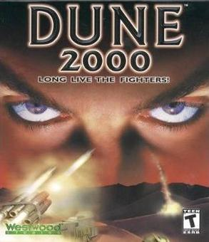
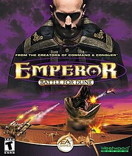
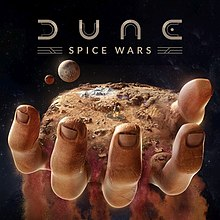

DUNE
|  | Dune 2000El jugador comanda una de las tres Casas y debe luchar por el control de la mezcla de especias en el planeta Arrakis. El jugador recolecta especia para 'solaris', la moneda del juego, y usa los solaris para crear unidades para abastecer sus fuerzas. Dune 2000 presenta una interfaz y una jugabilidad similar a Command & Conquer: Red Alert , donde a diferencia de Dune II , el jugador puede controlar más de una unidad a la vez. |
Emperor battle for DuneEl jugador comanda una de las tres Casas y debe luchar por el control de la mezcla de especias en el planeta Arrakis. El jugador cosecha especias, construye una base y entrena unidades para destruir uno o más enemigos de forma similar a la jugabilidad de títulos anteriores de estrategia en tiempo real producidos por Westwood Studios. Las batallas comienzan con un velo negro que oscurece partes invisibles del mapa, y una niebla gris de guerra oscurecerá gradualmente partes del mapa que ya no están a la vista de las unidades del jugador. |
 |
|  | Spice Warses un juego de estrategia 4X en tiempo real ambientado en el planeta desértico de Arrakis . Ciertas fichas tienen recursos como especias y minerales, y fichas únicas, como los casquetes polares, pueden producir grandes cantidades de agua para el jugador. El desierto profundo tiene el mismo propósito que los océanos en otros títulos, siendo intransitable para las tropas a menos que se hayan realizado ciertas investigaciones. Spice Wars tiene seis facciones: la Casa Atreides , la Casa Harkonnen , la Casa Corrino , la Casa Ecaz, los Contrabandistas y los Fremen. Cada Facción está representada por un líder diferente y tiene diferentes bonificaciones. El jugador puede seleccionar concejales al comienzo del juego para otorgar bonificaciones adicionales. |